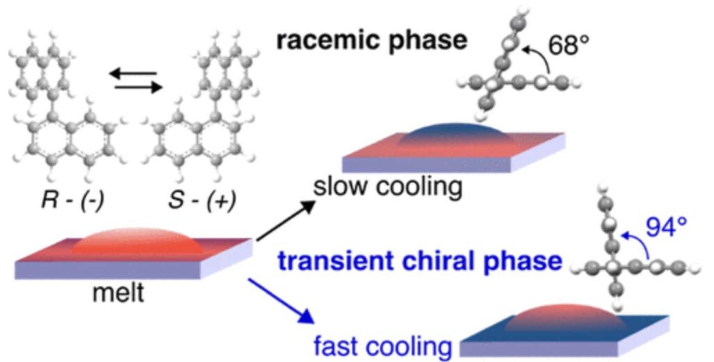

S. John, N. Strasser, J. Lang, A. Andotra, A. M. James, F. P. Lindner, C. Slugovc, C. Cuocci, R. Rizzi, I. B. Rietveld, Y. Geerts, R. Resel (2026). The Transient Chiral Phase of 1,1'-Binaphthyl. Journal of Physical Chemistry C 130, 12, 4608–4617.
This work investigates the emergence of a transient chiral phase in 1,1'-binaphthyl and its transformation into a stable chiral structure at room temperature. The study reveals that this intermediate phase exists only temporarily before converting within hours into the thermodynamically stable form. By combining experimental characterization and structural analysis, the results provide new insight into phase transitions and chiral ordering in molecular materials.